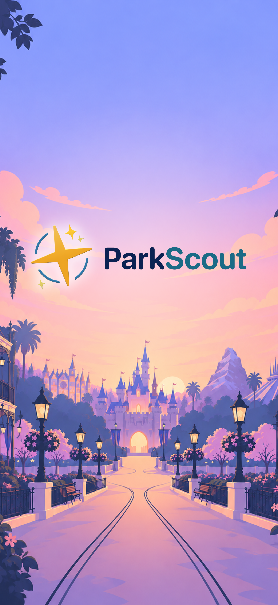
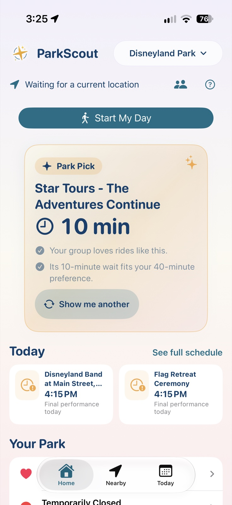
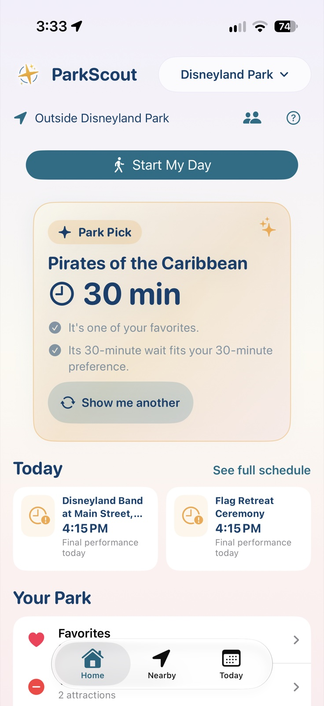
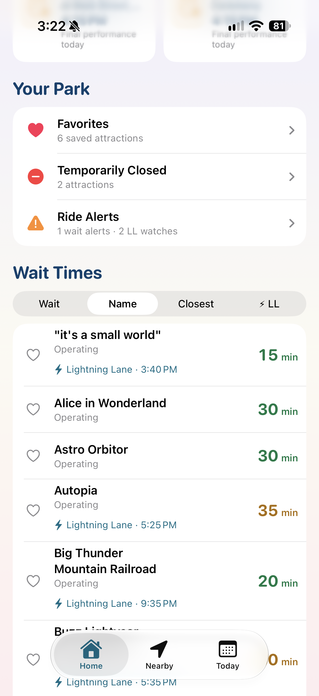
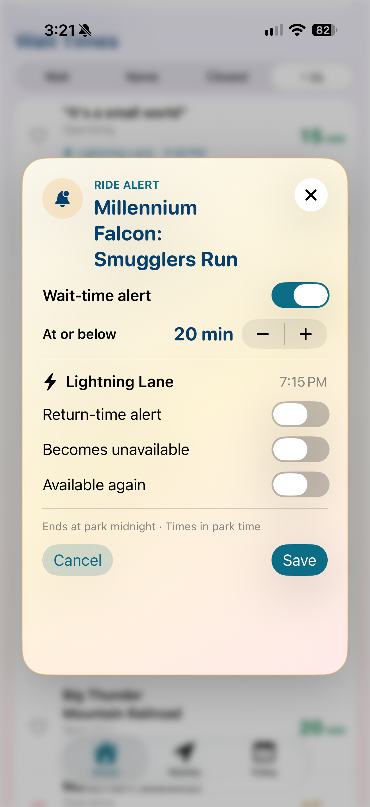
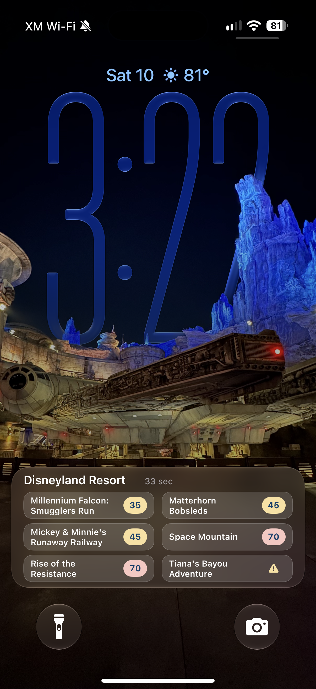
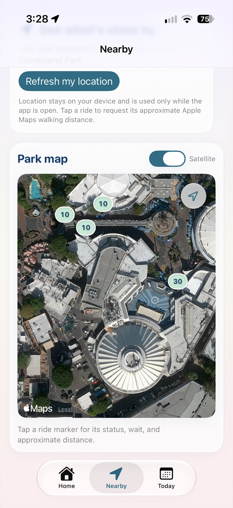
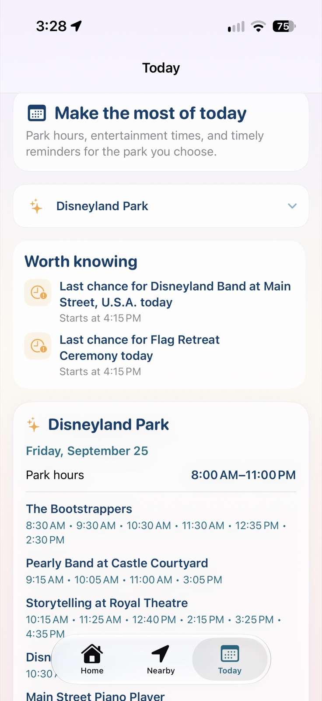

Tell us who’s coming
Add your crew and what each person is into. You can also say how long you’re happy to wait and whether you’d rather take it easy or keep moving.
Meet Park Scout
Park Scout is made for days at the Disneyland Resort in Anaheim, California. Its goal is simple: less time looking at your phone, more time enjoying the parks. Check waits and Lightning Lane return times for free. With Park Scout+, get a good next pick, let alerts watch for changes, and glance at favorite rides on your Lock Screen. Then get back to the people you came with.
How it worksMade for iPhone. Start free, or see what Park Scout+ adds.

The idea is simple
Save your group and favorite rides in free Park Scout. When you want help with “what now?”, Park Scout+ suggests a next step and watches the things you care about while you enjoy your day.
Add your crew and what each person is into. You can also say how long you’re happy to wait and whether you’d rather take it easy or keep moving.
Browse current waits and Lightning Lane return times. With Park Scout+, you can also get a suggestion that fits your group. If it doesn’t sound fun, ask for another.
Set a standby wait alert for free. Park Scout+ adds Lightning Lane watches and favorite waits on your Lock Screen. Tuck your phone away until you actually need it.
Tell Park Scout what matters to your group. You can always change your answers later.
Add the adults and children coming along once, so you can get to the fun part.
With Park Scout+ · One decision at a time
Park Pick, included with Park Scout+, puts one idea in front of you: a ride or a show that’s coming up soon. You get a short reason for the pick, so your group can decide and move on. If it doesn’t sound right, ask for another.
If your group is comfortable splitting up, Park Scout may find a better option for each group. It also takes known height restrictions into account and can suggest Rider Switch when availability is verified.




Lightning Lane watching with Park Scout+
You can see current Lightning Lane return times in free Park Scout. Tap the Lightning Lane tab beside Wait, Name, and Closest to see supported rides in return-time order.
With Park Scout+, tap a ride to choose a return time you want to watch. You can also ask for a heads-up when its Lightning Lane becomes unavailable or is available again. Save your choices, put your phone away, and let an alert bring you back when something changes—even with the app closed.
Park Scout watches the information; you still make reservations in the official Disneyland app. It doesn’t book Lightning Lanes or include a Lightning Lane purchase. Watches end at midnight in Anaheim, and times depend on the park data available.
Just watching a standby line? Free Park Scout includes one active wait alert. Park Scout+ lets you watch multiple waits and adds temporary closure and reopening alerts.
With Park Scout+ · A glance is enough
Heart the rides you care about, then tap Watch My Favorites on Home. Park Scout+ puts waits and ride status for up to six favorites on your Lock Screen, even if your choices span both parks.
That’s the Park Day Live Activity: a small view you can check without opening the app and getting pulled into another round of scrolling. Supported iPhones also show a quick view in Dynamic Island.
It can keep updating while your phone is locked. If information is delayed or missing, it won’t pretend an old wait is current. End the activity from Home when you’re done for the day.

When you do open the app
See what’s around you on a map. Tap a ride for its wait and status, plus an estimated walk when a route is available.

Wondering when the park closes or whether you can still catch a show? Find today’s hours and entertainment times together.

These screens show examples from the app. Waits and schedules change. Park information is powered by ThemeParks.wiki; check the official Disneyland app for official park services and final details.
Free to start. More help when you want it.
Free Park Scout gives you the park information you need for a quick check. Park Scout+ adds suggestions and monitoring, so you can spend even less of the day looking at your phone.
| What you can do | Park Scout Free | Park Scout+ Day, Week, or Annual |
|---|---|---|
| See live standby waits and ride status | Included | Included |
| See current Lightning Lane return times and prices, when available | Included | Included |
| Check hours, shows, and attraction details for both parks | Included | Included |
| Set up your group and save favorite rides | Included | Included |
| Explore Nearby and get walking estimates | Included | Included |
| Get standby wait alerts | IncludedOne active alert at a time | IncludedMultiple alerts at once |
| Get personalized Park Picks | Not included | Included |
| Watch Lightning Lane return times and availability | Not included | Included |
| Get temporary closure and reopening alerts | Not included | Included |
| Watch favorites on your Lock Screen and Dynamic Island | Not included | Included |
All three options unlock the same Park Scout+ features. Just pick what fits your visit.
Park Day
24 hours from purchase
For a day at the parks. A one-time purchase that doesn’t renew.
Park Week
7 days from purchase
For a longer visit. Seven full 24-hour days, with no automatic renewal.
Park Scout Annual
An annual subscription
For the trips you keep coming back for. Renews automatically each year until you cancel through Apple.
These are planned U.S. launch prices in USD. Check the purchase screen for current pricing in your region. You’ll find the options on Home under Settings → Park Scout+. Day and Week access starts when you buy, so choose your pass when you’re ready to use it.
A little more detail
Park Scout covers Disneyland Park and Disney California Adventure at the Disneyland Resort in Anaheim, California. It isn’t set up for Walt Disney World or other parks.
When you first open Park Scout, start with who’s coming along. Add adults and children, then tell it which kinds of rides and shows each person loves, is fine with, or would rather skip. If you know a child’s height, you can add that too. After that, choose a wait time that feels reasonable, your walking pace, and whether your group is okay splitting up. You can skip setup for now and come back anytime through the people button on Home.
It’s one idea for what to do next, right on Home, included with Park Scout+. Park Scout checks current waits, what’s open, what your group likes, your favorites, and how far away things are if you’ve shared your location. It may suggest a show that’s coming up soon if you’ve chosen to include shows and parades. You’ll see a short reason for the pick, so you can decide without digging through another list. “Show me another” is always there if you want a different idea.
With Park Scout+, it can. If you’ve said your group is okay splitting up, and there are at least two adults, Park Scout may suggest a good ride for each group with an adult in each one. It can also suggest Rider Switch when a height difference matters and that ride’s availability has been verified. You’ll still make the actual plans together and follow the park’s Rider Switch instructions.
Tap the ride on Home, either in Wait Times or Favorites. Pick the wait you’re hoping for, switch on “Wait-time alert,” and save. Allow notifications if your phone asks. Park Scout can then watch that ride while you enjoy the park, even when the app is closed. The alert lasts until midnight in Anaheim. Free Park Scout gives you one active standby alert, which you can edit, cancel, or use again after it finishes. Park Scout+ adds multiple simultaneous alerts and temporary closure and reopening notifications. Manage them under Ride Alerts.
First, tap the hearts beside the rides you want to keep an eye on. With Park Scout+, tap “Watch My Favorites” on Home. You can see waits or status for up to six favorites across both parks on the Lock Screen, plus a smaller view in Dynamic Island on supported iPhones. It’s a quick glance when you need one, without opening the app again. When you’re done, you can end your Park Day from Home.
Nearby shows rides on a map with their waits. If you share your location while using the app, tap a ride to see its status and an approximate walk when Apple Maps can find a route. Today has park hours and showtimes, plus a heads-up when a show is coming up or it’s the last performance of the day. Check what you need, choose a park if you want to switch schedules, and get back to your day.
With Park Scout+, tap a ride on Home to open its Ride Alert card, or choose Ride Alerts from that ride’s Nearby details. Under Lightning Lane, turn on “Return-time alert” and choose the time you want to watch. That alert is sent once when the published return time reaches or passes your chosen time. You can also switch on “Becomes unavailable” and “Available again” to watch those changes. Tap Save and allow notifications. Your watches work while the app is closed and end at midnight in Anaheim. Find, change, or remove them in Ride Alerts.
No. It shows published return times and, with Park Scout+, watches for changes. You still check availability and make your reservation in the official Disneyland app. A Park Scout+ purchase doesn’t include Disney’s Lightning Lane access, and an alert doesn’t reserve a spot. “Unavailable” doesn’t always mean sold out; if current data is missing, Park Scout won’t guess.
They all unlock the same Park Scout+ features. Park Day lasts 24 hours from purchase, and Park Week lasts seven full 24-hour days. Neither renews automatically. Annual is an auto-renewing yearly subscription you can manage or cancel through Apple. Open Home → Settings → Park Scout+ to see your access, purchase options, and Restore Purchases.
No. Park Scout uses your location while the app is active to help with nearby rides and walking estimates. It doesn’t save or upload your location. You can still use Park Scout without sharing it; you just won’t see location-based suggestions or walking distances.
Park Scout is for iPhone right now. We’ll add the App Store link to this page when it’s ready.
Yes, for official park services and details. Park Scout helps with the everyday “what should we do next?” decision and watches the rides you care about, so you can check your phone less often. Waits and schedules can change, and Park Scout lets you know when its information is missing or getting old.
For iPhone
Park Scout is for iOS. The App Store link will go here when it’s ready. For now, follow along for updates.